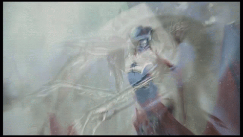
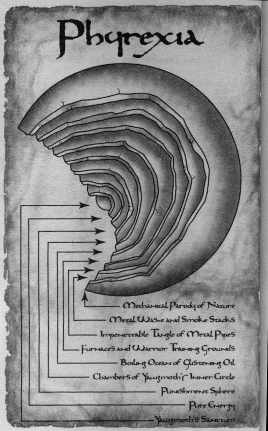

Phyrexia (/faɪˈrɛksɨa/ fy-REX-ia)[2] is an artificial plane of mechanical and biomechanical "life", an ecosystem comprised of metal, death, and tissue. A hellish world with an accelerated evolution of artifact creatures. It is also known as the Machine Hell and the Nine Hells.[3]
As a yet unnamed plane, Phyrexia was created by an ancient evil planeswalker.[4] Little is known of him, aside from the fact that he was a humanoid that preferred to assume the form of a dragon: he died just a month before Yawgmoth was transported to Phyrexia. According to the planeswalker Dyfed, the original size of Phyrexia was two or three times that of the Thran Empire.[5] Prior to Yawgmoth, Phyrexia already had most of its spheres, the first one bearing a paradisical, sunlit simulacrum of forests and plains with "serpents" coiled around the trunks of the "trees", while the second sphere was illuminated by a metallic sheen and bearing crude artifact creatures with amalgamous features, from which the "serpents" evolved. According to Dyfed the meat of these creatures was edible.[5]
Phyrexia was not so different from Mirrodin until Yawgmoth arrived thousands of years ago, brought there by the planeswalker Dyfed. Rebbec constructed a new infirmary on this new plane. 9000 years later this infirmary would become Gamalgoth, the first city of Phyrexia. Yawgmoth, with the remnants and descendants of the phthisis-inflicted Thran humans, whom he saved through the process he referred to as "Phyresis" (essentially the replacement of weak mortality with artifice) and from which he named the plane, came here when they were forced out of the Thran Empire as traitors. The ensuing war destroyed the nation of the Thran. Yawgmoth gave Phyrexian organisms a purpose: to thrive, to grow beyond the confines of Phyrexia and into the rest of the Multiverse. Over hundreds of years, Phyrexia evolved priests and acolytes who extolled and worshiped Yawgmoth, as well as demons and abominations of infinite variety to kill for him. Witch Engines, Birth Priests, Flesh Reavers, Hollow Dogs,[6] Blood Praetors. Over time a vast social order emerged, a horrifying food chain with church-like rites and rituals. Phyrexian organisms were judged by their ability to survive their nightmarish world. Successful ones were “evolved” with an unspeakable mixture of necrotic tissue and greasy metal. Eventually, Phyrexia created great Spore Engines and Plague Dreadnoughts – unimaginably huge, quasi-living artifact machines designed for war.
The Phyrexians' main purpose after their entrapment in the plane was to invade and destroy their old home of Dominaria. Many years were spent preparing for this invasion, with various plans, weapons, and soldiers being created throughout the ages.[7] Also aware that their artificial home plane would collapse after some time, the survival of the Phyrexian way depended upon the successful entrance into Dominaria and the defeat of its life forms. However, this transfer was made impossible for five millennia because of the closing of the portal between Dominaria and Phyrexia in the Caves of Koilos, where the planeswalker Glacian transfused his being into two halves of a powerstone that was used by his wife, Rebbec, to seal off the connection. During this time, the Phyrexians waited, plotted, and built up their forces for the time when their way would be clear into the old world.
After some five thousand years had passed, the nation of Argive was founded, and the brothers Urza and Mishra were born. The two were sent off to a camp to study artifice with the archaeologist, Tocasia, after some time. During an outing to survey a new dig site, the two brothers found the powerstone on a pedestal in a cave, and inadvertently opened the portal to Phyrexia when they took the stone and it split again into its two halves. This event would ultimately be the undoing of Dominaria. Seeing his opportunity, Yawgmoth sent through the Phyrexian demon, Gix, to scout. Eventually, the Brothers' rivalry developed into the Brothers' War, and Mishra eventually made contact with the Phyrexians. Gix had built up a religious following of machine worshippers, and he used his influence to manipulate the two sides. He offered aid and Phyrexian equipment to Mishra, even compleating him. The plans to defeat Urza were foiled when he activated the Golgothian Sylex, obliterating Argoth, the site of the war's final battle. After the time of this blast, the Shard of the Twelve Worlds was formed, and the Phyrexians were once again unable to travel to Dominaria.
For some time, Phyrexia was again forced to wait until it could resume its attack. It had also unknowingly encountered its greatest enemy, Urza, who had ascended to become a planeswalker. He had become obsessed with the destruction of those he blamed for his brother's sickening transformation. However, Urza was also locked out of Dominaria for a time and spent his next years wandering the planes. On one of his travels, he met Xantcha, a Phyrexian sleeper agent that had gone rogue and had been exiled from her home plane. The two were chased for a long time through the Multiverse by Phyrexians, who moved by way of Phyrexian Portals. After a time the two returned to Terisiare, at the end of the Ice Age, when Freyalise cast the World Spell and shattered the Shard. Not long thereafter, Gix returned to Dominaria and created another secretive cult. Phyrexians had also begun moving into Dominaria through new portals. Urza learned of Gix through Xantcha and traveled to Koilos to meet and battle him, with his allies, Xantcha and Ratepe. A final battle between Urza and Gix broke out in the ancient caves, and Urza defeated the Phyrexian demon with the help of his friends. However, to do this, both Xantcha and Ratepe were killed. Urza then proceeded to build up global responses to the threat of Phyrexia.
The Phyrexians began another plot to gain them re-entrance. Yawgmoth ordered the construction of the artificial plane of Rath, through the use of a newly created substance called flowstone. A giant refinery was constructed in the center of a pocket universe attached to Dominaria, so well-hidden that no planeswalker would find it. The flowstone helped the Phyrexians to construct an artificial world for use as a staging point for their troops. Eventually, the mass of this plane would grow beyond its own ability to contain, and Rath would overlay onto Dominaria. The violent dimensional barriers of the plane caused creatures and things from other planes to be pulled in, and peoples from Dominaria came to populate Rath along with forests and other creatures, as well. To rule Rath, an evincar was elected. The first known evincar was a man named Davvol, but the most famous of their number was the mighty Volrath, onetime blood-brother of Gerrard.
Later on, the Phyrexians were finally prepared for their climactic siege of Dominaria. Portal ships,[8] large flying machines with expansive Phyrexian portal technology attached, made their way into Dominaria from the skies of Rath and opened up an entrance for the Phyrexian war fleets. The ships entered Dominaria over the sky of Benalia, the first target of the invasion led by the Phyrexian general Tsabo Tavoc. Later, Tsabo led battles at Koilos and Yavimaya, losing those to Coalition forces after days of bloody strife. Tolaria was overtaken by Phyrexians and wiped out by the self-destructive wizard Barrin with his most powerful spell. New Argive was besieged and crushed, and the Burning Isles were overtaken, Steel entirely filled with Phyrexian troops and Urborg secured. The Phyrexians' plans in the oceans, however, were stymied by the merfolk of Etlan Shiis. With the destruction of the portals, the first wave of the invasion was finished. Tsabo Tavoc had been beaten and badly wounded by Gerrard and Karn, and retreated back to Phyrexia. There was time for only a brief repast, then the invasion resumed. The Rathi Overlay signaled the beginning of the second wave of the Phyrexian armies. As Rath placed itself on the surface of Dominaria, battles broke out all across the planet as Coalition forces intercepted more invaders. Meanwhile, Tsabo Tavoc was punished for her failures and repaired with under-grade scrap parts, ultimately being eaten by Crovax.
Phyrexia received its own share of devastation when Urza assembled the collection of planeswalkers he called the Nine Titans and armed them with massive suits of power armor known as titan engines, planning a counter-attack on the Nine Hells. Once inside the plane, the planeswalkers unleashed havoc, hoping to destroy the chamber. They were interrupted by the betrayal of Tevesh Szat, who killed his fellow planeswalker, Daria. Urza had a device implanted in each of the suits, a "kill rubrik," which could be tapped into by him, killing the occupant. Upon the expected treachery of Tevesh Szat, Urza activated the rubrik and killed Szat, sealing him in a Soul bomb, a powerful weapon that used the power of the soul inside to cause mass destruction. This would have been used to destroy Phyrexia, but Urza was convinced by angel-like Phyrexians to kill another of his companions, Taysir, using the same method he had on Szat. After this, he was taken to the Seventh Sphere to observe what was apparently his brother Mishra at the command of The Lord of The Wastes, who had been tortured for thousands of years in the hellish place. Next, he went to the Ninth Sphere to worship Yawgmoth himself, along with Gerrard.
The pair were forced to fight each other to the death. Yawgmoth stripped Urza of his planeswalker powers, leaving him a mere man. Gerrard had chosen to serve Yawgmoth in the hopes that the dark god could give him back his slain love, Hanna, while Urza had slowly become affectionate of his foes, admiring them as powerful beings even while fighting them for ages past, being promised by Yawgmoth himself that he would have unfathomable knowledge if he bested Gerrard. The fight that followed lasted for quite a while until Gerrard managed to land a strike that beheaded Urza.
It was then that Yawgmoth himself returned to Dominaria, for the first time in thousands of years. He was a being entirely changed from his previous existence on the plane; he appeared now like a cloud of death that killed all in its path and brought them back as undead to fight for Phyrexia. Yawgmoth himself was the final stage of the invasion. After the Weatherlight shot down the Null Moon to release its abundance of white mana on the dark god, Yawgmoth attacked the Weatherlight directly. It was then that the Legacy Weapon was completed and a fatal burst of energy ended the war, finally destroying the Lord of the Wastes himself. Phyrexian forces lost all will to live with the death of their god. Phyrexia had been defeated.
The plane of Phyrexia is nothing but a smoldering shell now. It was left in shambles after the Nine Titans launched their offensive, but whether or not any Phyrexians survived and stayed back is unknown. Approximately a century later, when Karona the False God was birthed, she traveled the multiverse through magical portals, seeking a plane for each color of mana. She was said to have met a variety of individuals from Serra to Teferi, and when she came in contact with a plane of black mana, it was revealed to be Phyrexia. Yawgmoth, appearing as a gigantic spirit, was said to be sleeping under a volcano in the ruined place. Later, however, the encounter with Teferi was proven false when the planeswalker returned to Dominaria, and it is thought that Karona had been delusional. Thus apparently Yawgmoth is truly dead, in Lord Windgrace's own words; indeed, among Dominarians, Urborg is referred to as the Tomb of Yawgmoth. Storywise, Phyrexia itself has not been returned to since the invasion.
Recently, stirrings on the plane of Mirrodin have given rise to a recreation of Phyrexia. Karn, Mirrodin's Creator, had accidentally left some of his own Phyrexian Oil contagion within the core, that has begun to spread, corrupting the golem Memnarch, and currently giving rise to a legion of creatures whose goal is to drive the people of the plane to Phyresis, giving rise to a New Phyrexia. The five praetors of New Phyrexia now control the plane, having defeated the Mirrodin resistance and turned it toward beginning a new inter-planar Phyrexian empire. Influenced by the Five Suns of Mirrodin, this New Phyrexia now encompasses all colors of magic.
The symbol that represents Phyrexia is a circle-and-vertical-bar, reminiscent of the Greek letter phi.[9][10] Masters 25 cards with the watermark, the set symbol for New Phyrexia, and the watermark for the Phyrexian-allied cards from the Scars of Mirrodin block count as "Phyrexian" for cards like Stamp of Approval.[11]
The plane consisted of nine nested spheres, each with its own purpose and, often, mechanical ecosystem.
The First Sphere of Phyrexia is a mechanical parody of life. At the time of Yawgmoth's arrival it was paradisical, with "serpents" and "strange birds" frolicking through sunlit forests. Afterwards, this was twisted into an artificial jungle bedewed by oily rain. Streams of oil also run through the first sphere's landscape. It is home to a few forms of dragon engines and many other mechanical animals simulating true life. Rusting artifact debris lay around long plains filled with metallic dust and soot. Huge furnaces spew ash into the air. Newts are brought to this Sphere, likely for the purpose of selecting those worthy for compleation. The first sphere has a sky described as red, sunless, and laden with gray clouds.
Scraps and ruins from the first sphere are contained in the Second Sphere. Metal beams, pipes, and other structures make up the roof. Smokestacks from lower levels also appear in this level of Phyrexia. These are all that offer any source of light. Gargantuan ammunition dumps as large as entire communities are located here.
The Third Sphere is filled with metal pipes, which create space distortions that prevent planeswalking to lower spheres. Horrors of Phyrexia stalk this place.
The Fourth Sphere is where the bulk of Phyrexia's population exists.[12] Here are more smokestacks, as well as the vat facilities where newts are grown and compleated. Vat priests work here, monitoring the Phyrexian newborns and performing the operations of transforming them into Phyrexian machines and warriors. Phyrexian warriors are trained in this place as well. The fourth sphere has clouds and lightning and, during the flashes, the pipes of the third sphere can be seen. Phyrexian planar portals, reinvented versions of old Thran portals, were built here and opened to new planes that would be conquered for Yawgmoth. They were opened only through sacrificing artifacts or the use of a great amount of energy.
The Fifth Sphere, called the Boiling Sea, is an ocean of glistening oil used by Vat Priests of Fourth to breed newts. Massive steam creatures also live here.
The Phyrexian Inner Circle is housed in the Sixth Sphere. It is a realm for the Phyrexian governmental body; here are the most prestigious of Yawgmoth's servants, such as demons,[13] the Praetors, and other officials. The sixth sphere has waving fields of barbed wire "grass" and the sky is solid white, seemingly resembling plains. It is here where pneumagogs are both spirit and flesh.
The Seventh Sphere of Phyrexia is an eternal furnace of flames used both to power the plane and punish those who have failed Yawgmoth. Gix is the only Phyrexian known to have survived the Seventh Sphere. It is a hellish place known as the "Punishment Sphere." Prisoners, artificers, and failures of any sort are brought here for torture. Gremlins live on this Sphere. A sky of enormous grinders is studded with diamond teeth, gnashing against each other, which spatial distortions causing their distance from the ground to vary.
The Eighth Sphere is a place of pure energy. Little else is known of it.
The Ninth Sphere is the control center for all of Phyrexia. Up until the Invasion, it was where Yawgmoth resided, plotting his eventual takeover of Dominaria. Yawgmoth also stayed here, dormant within his sanctum for some time, while his minions acted in his will and saw to it that his plans were executed.
Phyrexians can appear in many forms. They can often be recognized by features like dripping ichor, eyelessness, cysts, pustules, or the expulsion of noxious gases.[14] . With possible exception of the pneumagogs, all are aligned with black mana, and with the exception of the gremlins they are naturally all phyrexian.
The first stage of any Phyrexian's life is that of the Newt. These creatures are grown in vats of glistening oil and appear as androgynous, hairless humans. They are grown to adulthood then prepared and released for life in the dark plane. Newts are later put through a process called compleation. At this point, they are transformed into other forms of Phyrexians to serve any of a number of purposes for Yawgmoth.
Sleeper agents are fully grown and sometimes genetically modified newts who have not been compleated, appearing as regular human beings, sent to spy on other planes and perform clandestine operations outside of Phyrexia. Some are completely unaware of their status and task, simply dropped off on other planes to be used as hidden cameras.
Yawgmoth and the Phyrexians have active cults around the planes, mainly in Dominaria, who worshiped machines and the power of artifice. The Cult of Gix was one such example, which existed for the later duration of the Brothers' War. Those who participated in the cult would augment themselves with metal, embedding it in their skin in all sorts of ways, as a sign of their willingness to become machine from the flesh. Gix orchestrated the Cult from its center and even gave Phyrexian technology and instruction to his worshipers. Similar cults were active on various planes and areas at different times up until the Phyrexian Invasion.
Among the lowliest of lifeforms, the Gremlins are small, bat-eared creatures (apparently related to ouphes on other worlds) that torment artificers and pull apart unwanted artifacts. They also serve as menial labor.
These are the agents and specialized creations of Yawgmoth, created as versatile instruments in his mad war against all biological life. Minions serve a number of purposes, such as assassins, spies, or shock troops. Minions include the Infiltrator, the Slayer, and the Broodlings.
Phyrexia employs zombies, skeletons, and other forms of walking dead in its fight against the Multiverse. Some are made to function through the adding of artificial improvements. The Monitor, Unworthy Dead, Reaper, Scuta[15], and the Bloodstock are examples of undead in Phyrexia's ranks. Some of them are noxious and harmful to life even through touch. It is also notable that some of the Phyrexians printed as zombies were intended to be minions, but were changed to zombies for set design reasons.
Biomechanical constructs used to spread Phyrexian-engineered plagues. They can all be utilized as suicide strikers, destroying themselves to release their pathogenic load upon the battlefield. These include the Denouncer, Debaser, Defiler, and Plaguelord.
Phyrexian inhabitants and creations usually involve mechanical parts and additions, but some are entirely mechanical in nature. These are the massive devices and war machines used to wipe out any resistance left after the initial wave of primary combat troops and the release of the plagues. The Dragon Engines, War Beasts, Hulks, and Colossi all fall under this category. The largest and most brutal of Yawgmoth's monstrosities is the Phyrexian Dreadnought, another totally mechanical part of the arsenal.
Horrors are frightening monstrosities, sometimes combinations of creatures listed above. Many of them are free-willed and may live apart from the other Phyrexians, not taking part in the efforts of the rest of the plane. They can be dangerous to even their peers. The Rager, Witch Engine, Plague Spitter, Devouring Strossus, Gargantua, and Negator are all Horrors.
The most elite of warriors, those that are more intelligent and capable than mere killing devices, are the Knights. They have their human mental attributes, such as free will, but still remain under the command of Yawgmoth. Phyrexian Knights are composed of a few different Orders: the Eastern Paladins, dedicated to eradicating all-natural life; the Western Paladins, avid destroyers of all societies that are not of Phyrexia; and the Order of Yawgmoth, the prestigious guard of the Ineffable himself. (There also seem to have been human knightly orders known as the Eastern and Western Paladins on Dominaria that are not connected to Phyrexia.) The Sanguine Guard is another of the knightly orders, though its function is unclear.
The most powerful and loyal servants of Phyrexia were the Demons, beings of immeasurable evil. These terrible entities made up the greater part of Yawgmoth's Inner Circle and included the Ineffable's most trusted minion, Gix. Other, lesser Phyrexian demons existed as well, fleshy, mindless things whose only purpose was to scour other worlds for resources to be used on Phyrexia.
Described as insectile creatures with six wings and red shells, these creatures are purely physical on the upper spheres and purely spiritual on the lower spheres, but exist as both on the sixth sphere.[16] Their beauty convinced Urza to turn to the Phyrexian cause.[17]
The plane of Phyrexia had many weapons at its disposal. Aside from the Phyrexians themselves, there were artifacts, biohazardous spores and plagues, and mutational organic implements such as venom sacs. Typical Phyrexian soldiers made use of nasty blades and saws, though they often were equipped with plenty of claws, fangs, and brute force. Many had venomous fangs implanted in their faces, and others had poisonous stingers. They were stronger and more resilient to pain than the average human being. Power armor, improved upon for centuries from the original suits of the Halcyon Guard, was almost always fitted onto Phyrexians in various ways and appearances, possibly fueled by Phyrexian powerstones. Some Phyrexians had firearms, such as those used by the nightstalkers of Caliman, or the armament of the Reaper. These may have been beam weapons, like the ray cannons used in the flying ships of the Thran-Phyrexian War, or perhaps fired projectiles of some sort. Phyrexians that were entirely compleated were mainly metallic, some of which took entirely different shapes than the newt, becoming huge behemoths of steel, wire, and gears. The Gargantua is one example, using its sheer size to outmatch any opponents it would meet on the battlefield. Its huge claws were large enough to fit as much material and debris as an earthmover and were capable of crushing down virtually anything in that space. Mechanical devices were one of the potent forces in Phyrexia's armies. Many of Phyrexia's constructs were semi-magical, while others were complex combinations of purely mechanical processes. One of Phyrexia's greatest weapons was the engineered plague. Nano-technologically improved spores took out entire populations on Dominaria, these plagues were a major threat during the invasion. They were unleashed by Phyrexian carriers, such as the Plaguelord and the Defiler. There were different pathogens created by Phyrexia, but a few may have also been contained or enhanced specimens of the phthisis that inflicted the Thran before their fall. Some plagues were tested on Dominaria around the time of Urza's adventures, as well. These were part of an odd concoction, as described in Phyrexian progress notes; according to the text of other carriers, the disease is described which causes rashes, nausea, fever, cough, muscle aches, then delirium, convulsions, and death. This may have been a generic plague outbreak. It's been noted that glistening oil was to be used as a weapon late in the invasion, possibly after Yawgmoth's entrance into Dominaria, for reasons that have been lost to time. Hundreds of year later, some of the substance ended up on the artificial plane of Mirrodin through Xantha's heartstone, embedded in Karn, Mirrodin's creator, corrupting its guardian Memnarch and setting off that plane's own age of troubles.
Phyrexian religion is largely based upon the "religious" adherence to their scriptures and perspective. They believe that mortal flesh is a sin, imperfect, and prone to weakness and decay. They worship the perfection of machines; however, only those made by Yawgmoth and his order of priests are considered sacred. Artifacts made by mortal, natural hands are considered as abominations, unfit for Phyrexia, and not birthed for its cause. Even more despised are the artificers themselves, making a sacrilegious imitation of the work the Father of Machines has done. The Grand Evolution, the search for evolutionary superiority and improvement, and the process of phyresis, Yawgmoth's words denoting his battle against disease, death, and weakness, are objectives on which the Phyrexians focus themselves devoutly. Much of the beliefs of the Phyrexians, if they can be called beliefs, are explained in their hallowed writings, the Phyrexian Scriptures. Here are a few excerpts: "Let weak feed upon weak, that we may divine the nature of strength" "From void evolved Phyrexia. Great Yawgmoth, Father of Machines, saw its perfection. Thus the Grand Evolution began." "Ash is our air, darkness our flesh." "Father of Machines! Your filigree gaze carves us, and the scars dance upon our grateful flesh." "Great Yawgmoth moves across the seas of shard and bone and rust. We exalt him in life, in death, and in between."
Phyrexia has at its core a very gritty and mentally enticing philosophy. The ideas themselves are collectively called 'Phyresis', a phrase coined by Yawgmoth himself. This system is largely based upon the will to survive and the concept of controlled evolution. The key idea of the Phyrexians is comparable to social Darwinism; evolution by removal of all the foes of the favorable species, the Phyrexians. This is applied socially, by way of eugenics. Yawgmoth acts as the director of this process. Eliminating all foes and striving for efficiency, no matter the cost is the goal of Phyrexia. This plan is, without a doubt, very effective; however, it is sentimentally hollow and void of 'human' characteristics. Yawgmoth and his Grand Evolution are without art, emotion, morals, and personal thought or freedom. In this, Phyrexia is the polar opposite of Dominaria, with its virtues and culture.